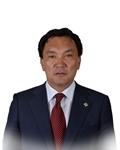

Member of the State Great Khural of Mongolia
Batzorig Batjargal
Member of the State Great Khural of Mongolia BATZORIG Batjargal
Mongolian People's Party
Education, graduated schools, education degree:
1973 - 1983 Secondary School #6, Ulaanbaatar City
1983 - 1987 Cutter tailor, Light Industry College, Czechoslovakia
1997 Business Management, Academy of Management
1999 - 2001 Economist, Mongolian University of Agriculture
2005 Ph.D. in Mongolian National University of Pedagogy
Working experience:
1989 - 1992 Master, Leather manufacture
1992 - 1999 Head, “Zeveg” cooperative
1999 - 2008 Executive Director, “Kyokushuzan Development Foundation” NGO
2004 - 2012 Member and Chair, Ulaanbaatar City Citizens Representatives Hural
2008 - 2012 Governor, Bayanzurkh District, Ulaanbaatar
2015 eputy Minister for Food and Agriculture
2016 Member of the State Great Hural (Parliament) of Mongolia
Awards:
2011 Order of Polar Star
Foreign language knowledge:
Russian, Czech